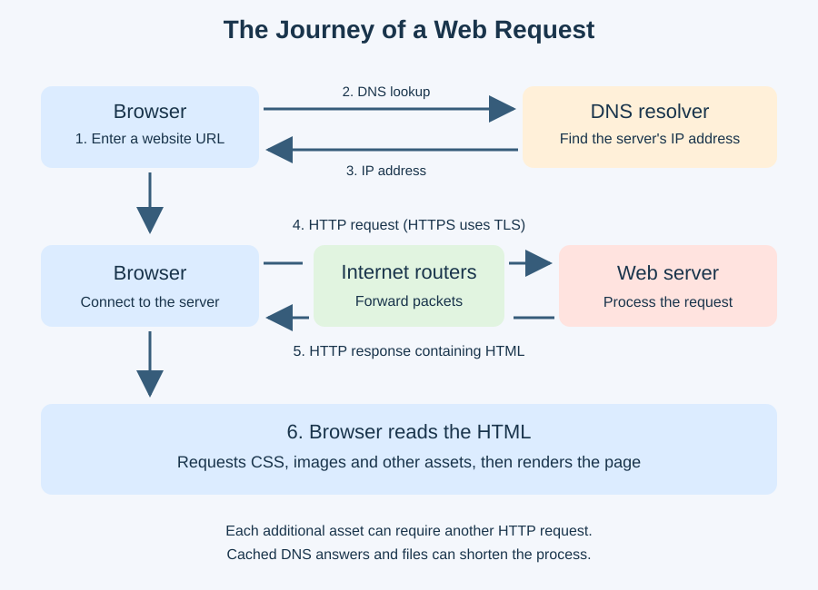

- The user enters a website URL in the browser.
- DNS resolves the hostname to an IP address.
- The browser connects to the server. HTTPS also establishes a secure TLS connection.
- An HTTP request travels as packets through routers.
- The server returns an HTTP response containing HTML.
- The browser reads the HTML, requests further assets and renders the page.
Cached DNS results and cached files can avoid some of these requests.